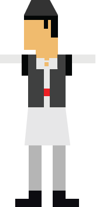

1 december
National Day of Romania

CREATING THE FIRST DIGITAL HORA
Hora (dance)Hora is a traditional Romanian folk dance where the dancers hold each other's hands and the circle spins, usually counterclockwise, as each participant follows a sequence of three steps forward and one step back. The dance is usually accompanied by musical instruments such as the cymbalum, accordion, violin, viola, double bass, saxophone, trumpet or the pan pipes. (copy bun ne tre pe aici, despre community involvment in hora).